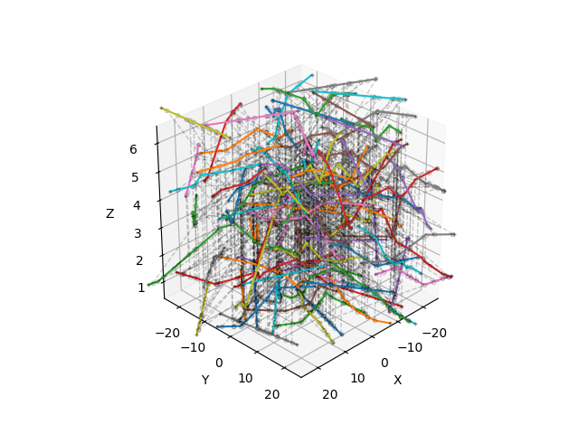

🧩 Solver
solver
{kind=link}
- fibermat.solver.solver(mat, mesh, packing=1.0, solve=<function spsolve>, itermax=1000, tol=1e-06, errtol=1e-06, interp_size=None, verbose=True, **kwargs)
An iterative mechanical solver for fiber packing problems. It solves the quadratic programming problem:
\[\min_{\mathbf{u}, \mathbf{f}} \left( \frac{1}{2} \, \mathbf{u} \, \mathbb{K} \, \mathbf{u} - \mathbf{F} \, \mathbf{u} - \mathbf{f} \, (\mathbf{H} - \mathbb{C} \, \mathbf{u}) \right)\]\[\quad s.t. \quad \mathbb{C} \, \mathbf{u} \leq \mathbf{H} \, , \quad \mathbf{u} \leq 0 \, , \quad \mathbf{f} \geq 0 \quad and \quad \mathbf{f} \, (\mathbf{H} - \mathbb{C} \, \mathbf{u}) = 0\]- where:
\(\mathbf{u}\) is the vector of generalized displacements (unknowns of the problem).
\(\mathbf{f}\) is the vector of generalized forces (unknowns Lagrange multipliers).
\(\mathbb{K}\) is the stiffness matrix of the fiber set.
\(\mathbf{F}\) is the vector of external efforts.
\(\mathbb{C}\) is the matrix of non-penetration constraints.
\(\mathbf{H}\) is the vector of minimal distances between fibers (minimal distances).
The mechanical equilibrium allows reformulating the problem as a system of inequalities:
\[\begin{split}\Rightarrow \quad \left[\begin{matrix} \mathbb{K} & \mathbb{C}^T \\ \mathbb{C} & 0 \end{matrix}\right] \binom{\mathbf{u}}{\mathbf{f}} \leq \binom{\mathbf{F}}{\mathbf{H}}\end{split}\]which is solved using an iterative Updated Lagrangian Approach.
Hint
- Models used to build the matrices are implemented in 🔧 Model:
𝕂 and 𝑭 :
stiffness().ℂ and 𝑯 :
constraint().
Parameters
- matpandas.DataFrame
Set of fibers represented by a
Matobject.- meshpandas.DataFrame
Fiber mesh represented by a
Meshobject.- packingfloat, optional
Targeted value of packing. Must be greater than 1. Default is 1.0.
Returns
- tuple
- Ksparse matrix
Stiffness matrix (symmetric positive-semi definite).
- Csparse matrix
Constraint matrix.
- uInterpolate
Displacement vector.
- fInterpolate
Force vector.
- FInterpolate
Load vector.
- HInterpolate
Upper-bound vector.
- ZInterpolate
Upper-boundary position.
- rlambdaInterpolate
Compaction.
- maskInterpolate
Active rows and columns in the system of inequations.
- errInterpolate
Numerical error of the linear solver.
See also
Simulation results are given as functions of a pseudo-time parameter (between 0 and 1) using
Interpolateobjects.Other Parameters
- solvecallable, optional
Sparse solver. It is a callable object that takes as inputs a sparse symmetric matrix 𝔸 and a vector 𝒃 and returns the solution 𝒙 of the linear system: 𝔸 𝒙 = 𝒃. Default is scipy.sparse.linalg.spsolve.
- itermaxint, optional
Maximum number of solver iterations. Default is 1000.
- tolfloat, optional
Tolerance used for contact detection (mm). Default is 1e-6 mm.
- errtolfloat, optional
Tolerance for the numerical error. Default is 1e-6.
- interp_sizeint, optional
Size of array used for interpolation. Default is None.
- verbosebool, optional
If True, displays a progress bar during simulation. Default is True.
- kwargs :
Additional keyword arguments passed to matrix constructors.
Example
from fibermat import *
# Generate a set of fibers
mat = Mat(100)
# Build the fiber network
net = Net(mat)
# Stack fibers
stack = Stack(mat, net)
# Create the fiber mesh
mesh = Mesh(stack)
# Solve the mechanical packing problem
K, C, u, f, F, H, Z, rlambda, mask, err = solver(
mat, mesh, packing=4, lmin=0.01, coupling=0.99
)
# Deform the mesh
mesh.z += u(1)[::2]
# Figure
fig, ax = plt.subplots(subplot_kw=dict(projection='3d', aspect='equal',
xlabel="X", ylabel="Y", zlabel="Z"))
ax.view_init(azim=45, elev=30, roll=0)
if len(mesh):
# Draw elements
for i, j, k in tqdm(zip(mesh.index, mesh.beam, mesh.constraint),
total=len(mesh)):
# Get element data
a, b, c = mesh.iloc[[i, j, k]][[*"xyz"]].values
if mesh.iloc[i].s < mesh.iloc[j].s:
# Draw intra-fiber connection
plt.plot(*np.c_[a, b],
c=plt.cm.tab10(mesh.fiber.iloc[i] % 10))
if mesh.iloc[i].z < mesh.iloc[k].z:
# Draw inter-fiber connection
plt.plot(*np.c_[a, c], '--ok',
lw=1, mfc='none', ms=3, alpha=0.2)
if mesh.iloc[i].fiber == mesh.iloc[k].fiber:
# Draw fiber end nodes
plt.plot(*np.c_[a, c], '+k', ms=3, alpha=0.2)
# Set drawing box dimensions
ax.set_xlim(-0.5 * mesh.attrs["size"], 0.5 * mesh.attrs["size"])
ax.set_ylim(-0.5 * mesh.attrs["size"], 0.5 * mesh.attrs["size"])
plt.show()